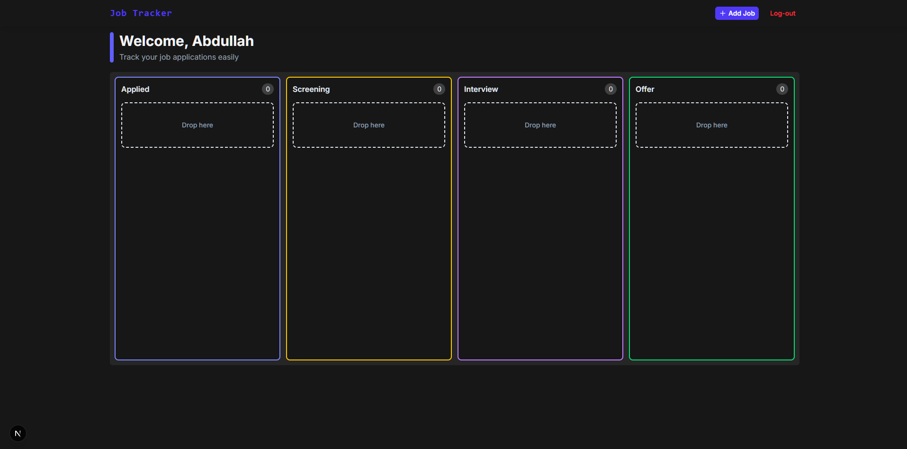

Full-stack Kanban board with auth (Neon Auth / Better Auth),
Server Actions, and REST Route Handlers. IDOR-hardened — every
query scoped to userId so a valid job ID paired
with the wrong session never matches a row. Drag-and-drop
across four pipeline columns (Applied → Screening → Interview
→ Offer) via dnd-kit; optimistic updates with
TanStack Query cache rollback and toast
feedback on failure. Forms with React Hook Form + Zod; dialogs
with Radix UI; fully responsive 1/2/4-column layout.